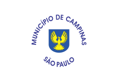

Cidades De São Paulo
São Paulo (pronúncia em português: /sɐ̃w̃ ˈpawlu/ link=. ouça) é uma das 27 unidades federativas do Brasil. Está situado na Região Sudeste e tem por limites os estados de Minas Gerais a norte e nordeste, Paraná a sul, Rio de Janeiro a leste e Mato Grosso do Sul a oeste, além do Oceano Atlântico a sudeste. É dividido em 645 municípios e sua área total é de 248 222,362 km², o que equivale a 2,9% da superfície do Brasil, sendo pouco maior que o Reino Unido. Sua capital é o município de São Paulo e seu atual governador é João Doria.
Campinas

Campinas é um município brasileiro no interior do estado de São Paulo, Região Sudeste do país. Pertence à microrregião e mesorregião homônimas, distante 99 km a noroeste de São Paulo, capital estadual. Ocupa uma área de 797,6 km², da qual 238,323 km² estão em perímetro urbano e os 559,277 km² restantes constituem a zona rural.[11] Em 2020, sua população foi estimada pelo Instituto Brasileiro de Geografia e Estatística em 1 213 792 habitantes,[7] sendo o terceiro município mais populoso de São Paulo (ficando atrás de Guarulhos e da capital) e o décimo quarto de todo o país. Aparece em quinto lugar entre 100 municípios analisados pelo Índice das Melhores e Maiores Cidades Brasileiras, o BCI100, elaborado pela Delta Economics & Finance com base nos dados do Censo 2010 do IBGE e do Ideb.
Guarulhos
Guarulhos é um município da Região Metropolitana de São Paulo, no estado de São Paulo, no Brasil. É a segunda cidade mais populosa do estado, a 13ª mais populosa do Brasil e a 53ª mais populosa do continente americano, com 1 392 121 habitantes, segundo estimativa do Instituto Brasileiro de Geografia e Estatística (IBGE) para 1.º de julho de 2020.[3]
Mauá

Mauá é um município da Região Metropolitana de São Paulo, no estado de São Paulo, no Brasil. Pertence à região do ABC Paulista, na Zona Sudeste da Grande São Paulo, em conformidade com a lei estadual nº 1.139, de 16 de junho de 2011[7] e, consequentemente, com o Plano de Desenvolvimento Urbano Integrado da Região Metropolitana de São Paulo (PDUI).[8] A densidade demográfica é de 6 463,7 habitantes por quilômetro quadrado. Porém a densidade urbana é bem maior, já que um terço do município é área industrial e 10% pertence à área rural e ao Parque Estadual da Serra do Mar. Em 2014, era o 20° município do estado em produto interno bruto, e em 2018 o 11º em população, com 468 148 habitantes. Mauá está entre as 50 cidades mais populosas de todo o Brasil.
Diadema
Diadema[8] é um município do estado de São Paulo, na Região Sudeste do Brasil. Ocupa uma área de 30,732 km². A população de Diadema, estimada pelo IBGE para 1.º de julho de 2020, era de 426 757 habitantes[1], sendo o 14.º município mais populoso do estado e o 57.º do Brasil. Está localizado na Zona Sudeste da Grande São Paulo, na Região Metropolitana de São Paulo, em conformidade com a lei estadual nº 1.139, de 16 de junho de 2011[9] e, consequentemente, com o Plano de Desenvolvimento Urbano Integrado da Região Metropolitana de São Paulo (PDUI)[10].
Mogi das cruzes
O Parque Dom Pedro II é um parque localizado no bairro da Sé, no distrito da Sé, no município de São Paulo, no Brasil. Fica na divisa entre o Centro Histórico de São Paulo e o bairro do Brás. É cortado por cinco viadutos e pela Avenida do Estado, tendo sobrado cerca da metade da área verde que originalmente possuía em sua inauguração. Em sua área está localizado o Terminal Parque Dom Pedro II de ônibus (o mais movimentado da cidade, que atende principalmente as regiões Leste, Sudeste e Nordeste da capital), a Estação Pedro II do Metrô de São Paulo e a Escola Estadual São Paulo. Tal movimento deu origem a uma das maiores concentrações de vendedores ambulantes de São Paulo.
Osasco

Osasco (pronúncia AFI: [o'zaskʊ]) é um município brasileiro localizado na Região Metropolitana de São Paulo,[9][10] no estado de São Paulo, no Brasil. Nascido como um bairro da capital paulista no final do século XIX, tornou-se município emancipado após um plebiscito em 1962.[11] Ocupa uma área de 64,954 km², e sua população estimada no ano de 2019 era de 698 418 habitantes,[12] sendo o 8º mais populoso do estado de São Paulo
Santo André

Santo André é um município brasileiro da Região do Grande ABC, localizado na Zona Sudeste da Grande São Paulo, parte da Região Metropolitana de São Paulo, em conformidade com a lei estadual nº 1.139, de 16 de junho de 2011[10] e, consequentemente, com o Plano de Desenvolvimento Urbano Integrado da Região Metropolitana de São Paulo (PDUI).[11]
São josé

São José dos Campos (pronúncia em português: /sɐ̃w̃ ʒuˈzɛ dus ˈkɐ̃pus/) é um município brasileiro no interior do estado de São Paulo. Está situado no Vale do Paraíba Paulista, a leste da capital do estado, distando desta cerca de 81 km. É sede da Região Metropolitana do Vale do Paraíba e Litoral Norte e ocupa uma área de 1 099,409km², da qual 353,9 km² estão em perímetro urbano. Em 2020, sua população foi estimada pelo IBGE em 729 737 habitantes,[2] sendo o quinto mais populoso de São Paulo e o 23.º de todo o país, além de ser o segundo município mais populoso do interior do Brasil, ficando atrás somente de Campinas.
São paulo

São Paulo (pronuncia-se AFI: [sɐ̃w̃ ˈpawlu] Loudspeaker.svg ouça) é um município brasileiro, capital do estado homônimo e principal centro financeiro, corporativo e mercantil da América do Sul.[10] É a cidade mais populosa do Brasil, do continente americano, da lusofonia e de todo o hemisfério sul.[11] São Paulo é a cidade brasileira mais influente no cenário global, sendo, em 2016, a 11.ª cidade mais globalizada do planeta,[10] recebendo a classificação decidade global alfa, por parte do Globalization and World Cities Study Group & Network (GaWC).[12] O lema da cidade, presente em seu brasão oficial, é Non ducor, duco, frase latina que significa "Não sou conduzido,
Sorocaba

Sorocaba (pronuncia-se AFI: [so̞ɾo̞ˈkabɐ]) é um município brasileiro no interior do estado de São Paulo. É a quarta mais populosa do interior paulista (precedida por Campinas, São José dos Campos e Ribeirão Preto) e a mais populosa da região sudeste paulista com uma população de 687.357 habitantes, estimada pelo IBGE para 2020,[5] sendo uma capital regional.[9]